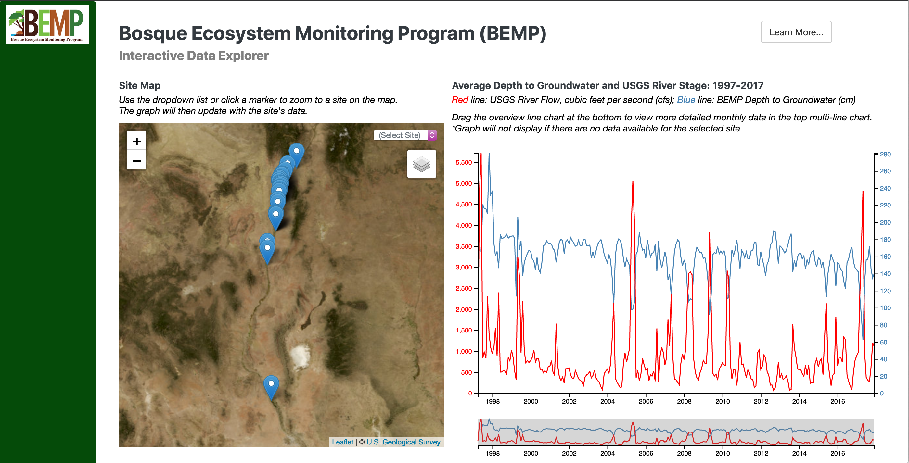

Welcome to my personal website! I am a researcher interested in leveraging remote sensing and GIS technologies for wildlife conservation.
Phi Beta Kappa
Collaboration with Blair Mirka for Dr. Liping Yang's Internet Mapping Course (UNM 585L, Spring 2021)
